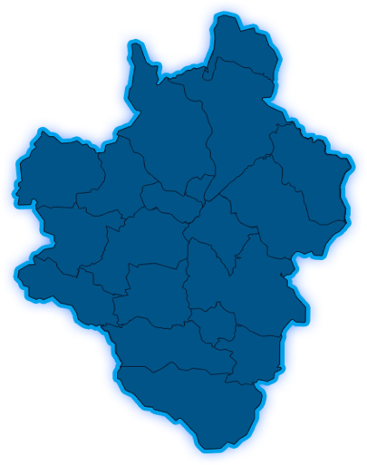

三级服务站体系
0
县服务中心
0乡镇服务站
0村服务部
0三级服务体系人员
新增贷款信息
贷款实时监控分析
0
正在审批的项目数
0已审批的项目数
0%逾期率
0%不良率
信用评价数据
已采集人员：
累计金融扶贫贷款金额(元)
0

地区贷款前七名排行榜
贷款类型数据分析
0家
农户
0家
新型农业经营主体
0家
龙头企业
- 农户
- 新型农业经营主体
- 龙头企业
农户脱贫产业分布
- 特色工业
生态旅游
电子商务
- 绿色农业
放款主体数据分析
农商行
村镇银行
农行
邮政储蓄
中原银行